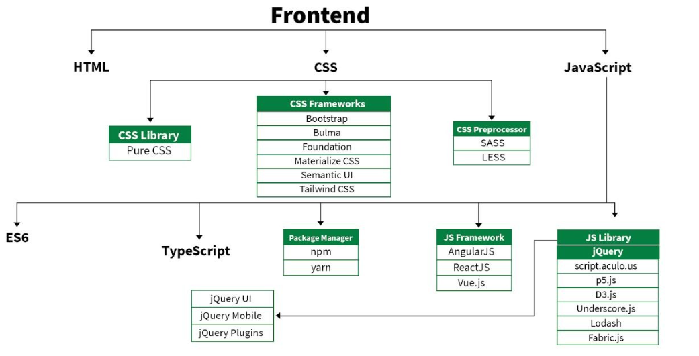

"Learning HTML and CSS is a lot more challenging than it used to be. Responsive web design adds more layers of complexity to design and develop websites. " This program covers UI Design (HTML|CSS| Javascripts | Jquery), PHP development for the web, quick to learn, easy to deploy and provides substantial functionality required for ecommerce along with Database MYSQL. Perform hands-on practice with database to create database driven HTML forms and reports. WHY WEB DEVELOPMENT IS IMPORTANT? A well-designed website is essential for reaching a larger audience and generating more leads or customers. Using a website, you can collect and read testimonials about your products and services much more quickly and easily. Web development and design help to promote a company's brand name.

Visual Studio Code is a streamlined code editor with support for development operations like debugging, task running, and version control. It aims to provide just the tools a developer needs for a quick code-build-debug cycle and leaves more complex workflows to fuller featured IDEs, such as Visual Studio IDE.
In every Software web application development User interface designing and development play major role. User Interaction happen to UI as soon as open webpage. The user interface will be combination of HTML4,5, CSS2,3, Javascript, Jquery, Angular, XML Parsing, JSON Parsion, API Web services. Learn all the skills, tools, and processes you need to become a UI designer.